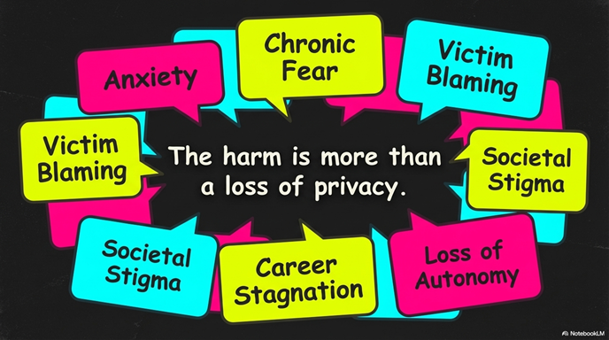

📅 Published: December 2025
⏱️ Read Time: 6 min
👁️ Current Affairs
🚨 The Brutal Reality: Privacy is Dead in India

We live in a "fishbowl society" where privacy is not a right—it's a luxury. In the
age of Artificial Intelligence, technology has become a double-edged sword, and women are
bearing the brunt of this digital transformation.
The Crisis at a Glance:
- 🔴 AI-generated deepfake pornography of women created without consent
- 🔴 Algorithms generating fake sexual images targeting mostly women
- 🔴 Victims blame themselves instead of perpetrators
- 🔴 Laws exist but fail to protect anyone
- 🔴 Conviction rates remain near zero while victimization escalates
Welcome to modern India, where "non-consensual intimate image abuse" (NCII) is the fastest-growing
cyber crime, yet the system treats it as a mere inconvenience.
📊 What's Actually Happening: The NCII Epidemic
Non-Consensual Intimate Image Abuse (NCII) refers to the creation, distribution, and
possession of intimate images without consent—particularly deepfake pornography generated by
artificial intelligence algorithms.
The Numbers Tell the Story:
- 📋 National Crime Records Bureau (NCRB) lumps ALL cybercrimes into ONE category
- ❌ No specific data on deepfake or NCII cases
- ❌ No granular tracking of gender-wise victim distribution
- 🚨 Thousands of cases filed daily across India
- 💔 Conviction rates: Dangerously low and untracked
- 📉 Most victims: Young women (aged 18-35)
Who Are the Victims?
Young women suffer disproportionately from NCII. They experience:
- Psychological trauma: anxiety, chronic fear, depression
- Social stigma: shame, blame, ostracization
- Career destruction: employment loss, professional stagnation
- Self-harm: In extreme cases, survivors have attempted suicide
- Loss of autonomy: Permanent emotional & psychological damage
"The conventional frameworks describe NCII as 'loss of privacy' or 'data breach.' But the reality is far
more sinister—it is technological rape, weaponized misogyny, and assault on human dignity."
⚖️ Why Current Laws Are Fundamentally Broken
India has multiple privacy and data protection frameworks:
- ✅ Puttaswamy Judgment (2017): Recognition of Right to Privacy
- ✅ Information Technology Act, 2000
- ✅ Intermediary Guidelines & Digital Media Ethics Code (2021)
- ✅ Digital Personal Data Protection Act (2023)
Yet privacy remains opaque, unprotected, and poorly enforced.
The Core Problems:
Why Laws Fail NCII Victims:
- ❌ Laws are GENERIC — written for general privacy, not technology-specific abuse
- ❌ No clear accountability mechanisms for deepfake generation & dissemination
- ❌ No gender-neutral framework (transgender victims completely overlooked)
- ❌ Deepfake generation is a legal grey area — not clearly criminalized
- ❌ Insufficient penalties for perpetrators relative to harm caused
- ❌ No victim support or compensation mechanisms
The Fundamental Contradiction:
India positions itself as an IT powerhouse with cutting-edge digital infrastructure. Yet our
privacy laws are stuck in 2017, written before deepfake technology became mainstream.
Technology evolved. Laws stayed frozen.
📋 The SOP That Changed Nothing
On November 11, 2025, the Ministry of Electronics & Information Technology finally issued
Standard Operating Procedures (SOPs) to curb NCII circulation.
What the SOP Promises:
Positive Steps:
- ✅ Content must be taken down within 24 hours of reporting
- ✅ Platforms must safeguard "digital dignity" of users
- ✅ Multiple complaint options provided
- ✅ Guidelines mandate that such content be treated as priority
- ✅ Long-awaited recognition of the problem
But Here's the Reality Check:
Why an SOP Alone Isn't Enough:
- 🔴 SOPs are procedural, not legislative — no legal backing for enforcement
- 🔴 Effectiveness depends on platform compliance — which is voluntary, not mandatory
- 🔴 Victim awareness is ZERO — most women don't know this SOP exists
- 🔴 Police lack cyber-investigative capacity to pursue perpetrators
- 🔴 Platform accountability mechanisms are weak — no financial penalties for
violation
- 🔴 Victim-blaming culture persists — society blames women, not perpetrators
💔 The Real Victims: Stories Behind the Statistics
Behind every deepfake case is a woman whose dignity has been violated, her autonomy stripped, and her future
threatened.
Common Patterns of Abuse:
- Harassment & Intimidation: Deepfakes used as tools of coercion and control
- Revenge Porn: Ex-partners weaponizing intimate images
- Cyberstalking: Targeted campaigns to humiliate and isolate victims
- Professional Sabotage: Deepfakes used to destroy careers and reputations
- Blackmail & Extortion: Criminal gangs using deepfakes as extortion tools
Why Victims Don't Report:
Most NCII victims suffer in silence because:
- 🚫 They blame themselves ("Why did I trust them?", "This is my fault")
- 🚫 They fear police judgment and victim-blaming
- 🚫 They fear social ostracization and permanent loss of reputation
- 🚫 They know conviction rates are near-zero, making reporting futile
- 🚫 They lack digital literacy to understand their rights
- 🚫 They face intersectional discrimination (gender + class + caste)
The Tragedy: An entire ecosystem of abuse thrives because victims have no safe avenue to
report, society blames them for being victimized, and the law offers no meaningful recourse. This isn't just
legal failure—it's institutional abandonment.
🚨 Transgender Persons: Completely Forgotten
While the SOP attempts to address NCII, it is completely silent on transgender and non-binary
persons—who are disproportionately targeted by deepfake harassment.
The Oversight:
- ⚠️ The Supreme Court recognized transgender persons as the "third gender" entitled to
equal rights
- ⚠️ Yet the SOP makes zero mention of transgender victims
- ⚠️ Transgender women are disproportionately targeted by deepfake harassment campaigns
- ⚠️ Existing law provides zero accountability mechanisms for transgender-specific abuse
- ⚠️ This isn't an oversight—it's institutional erasure
This Needs to Change: Any meaningful NCII law must be explicitly gender-neutral,
acknowledging and protecting transgender persons, who face disproportionate vulnerability to deepfake-based
harassment.
🎯 What Needs to Change: A Comprehensive Action Plan
The SOP is a first step, but only a first step. Here's what India actually needs:
1. Dedicated NCII-Specific Legislation
Go beyond SOPs. Enact a dedicated law that:
- ✅ Clearly defines deepfake pornography & NCII
- ✅ Specifies criminal penalties & victim compensation
- ✅ Makes platform liability mandatory, not voluntary
- ✅ Establishes victim support services & rehabilitation
2. Gender-Neutral & Inclusive Framework
- ✅ Protect women, transgender persons, & non-binary individuals equally
- ✅ Acknowledge specific harassment patterns for each demographic
- ✅ Provide targeted support services
3. Police Capacity Building
- ✅ Train officers on cyber-NCII investigations
- ✅ Establish dedicated cyber-NCII units in every district
- ✅ Implement victim-centric investigation protocols
- ✅ Track & report NCII cases separately from general cybercrimes
4. Platform Accountability & Transparency
- ✅ Real-time deepfake detection technology
- ✅ Transparent content removal timelines (24 hours mandatory)
- ✅ Financial penalties for non-compliance
- ✅ Regular algorithm audits for bias & exploitation
5. Victim Support & Rehabilitation
- ✅ Free trauma counseling & mental health support
- ✅ Free legal aid for NCII cases
- ✅ Anonymous reporting mechanisms
- ✅ Victim compensation funds
- ✅ Digital literacy programs for awareness
6. AI-Specific Safeguards
- ✅ Regulate deepfake generation tools
- ✅ Require explicit consent for intimate image usage in AI training
- ✅ Watermark detection systems for sensitive images
- ✅ Clear platform liability for AI-generated NCII content
🔚 Conclusion: Privacy is a Human Right, Not a Luxury
The Uncomfortable Truth: Technology evolved. Laws stayed in 2017. Women suffer.
India isn't alone in facing the deepfake crisis. But India's response is weakest among
democracies. While other countries are passing comprehensive NCII-specific legislation, India
is still issuing voluntary SOPs.
The Bottom Line:
- ✅ The SOP is a step forward—acknowledge it
- ⚠️ But it's only a FIRST step—not a solution
- 🚨 Much more legislative work is needed
- 💪 Victims deserve JUSTICE, not just procedures
- 🎯 Women's dignity is not negotiable
We live in a fishbowl where privacy is increasingly illusory. But privacy is not a luxury—it's a
fundamental human right. India must move beyond SOPs and SOPs and enact comprehensive,
victim-centric, gender-neutral legislation that holds perpetrators accountable and supports survivors.
Until then, deepfake victims will keep suffering in silence, and the system will keep failing them.
💔